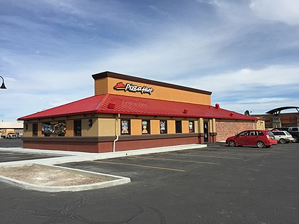

Pizza Hut - світова мережа ресторанів-піцерій, яка складається більш ніж з
34 тис. точок у 100 країнах світу
Входить у корпорацію Yum! Brands
Компанію засновано 1958 року братами Деном та Френком Карні в місті Вічита, штат Канзас.
Спеціалізується на приготуванні американського варіанта піци, а також таких гарнірів
як паста, курячі крильця, хлібці, часникові грінки
